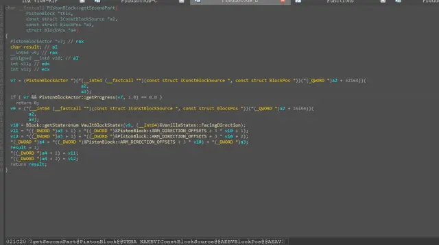

我尽量写的通俗易懂
在基岩版中，活塞在推出方块时是一个一个检查方块是否能推出的。
活塞的检查是根据位置进行的，每次检查会有三个重要的参数。
首先是要检查的坐标，然后是上一个检查的位置到这个位置的方向（第一个检查的位置的这个方向根据活塞推出或者收回决定）
中间的步骤主要就是看这个方块是否可以推动，或者是否推动了会被破坏。
当检查发现此位置是史莱姆方块或者蜂蜜方块则做特殊检查。具体方式是遍历检查周围的五个方向的方块。它会根据两个后两个方向参数计算并忽略掉一个方向，一般而言，就是史莱姆方块位置检查之前的那个位置（因为已经检查过了所以不需要再检查了，只检查没检查过的五个方向。不过这里是重点）
另一个重要的是对方块secondpart的检查。
众所周知游戏中有很多两格的方块，比如两格的草，门。
活塞在推方块时对这些两格的方块有特殊的检查，不过一般来说是不会触发的，因为这些两格方块大多数属于一推就破坏的方块。
然而有两个特例，其中一个就是活塞。
活塞在被推时会尝试获取自己的另一半。具体来说是这样判断的：
先获取自己位置的方块实体（如果没有就默认为自己有secondpart），然后根据这个方块实体储存的第208字节加上204字节（对于活塞方块实体来说，这两个位置代表了活塞推出的progress和lastprogress）的值是否不等于0判断活塞是否有secondpart。如果不等于0说明活塞有secondpart，便会获取这个活塞活塞头面向的那一格方块，当作自己的secondpart交给推这个活塞的活塞去再检查，如果通过了检查便同样加入要被推出的方块列表。
刚刚提到了活塞推出活塞时对secondpart的检查是通过获取活塞的方块实体的值来确定有没有secondpart的。但是mojang很明显忘记检查这个方块实体是否是活塞方块实体了。我们完全可以通过方块实体分离技术用一个别的方块实体来混淆，让活塞以为这就是它的方块实体。
这样的话，我们希望活塞可以带着它朝向的那一个（也就是secondpart的位置）一起被推动，只需要找到一种储存的204字节的值+208字节的值不等于0的方块实体就可以了。目前找到最稳定的是潮涌核心方块实体
前文提到，活塞在检查方块时最后一个方向参数是根据上个检查的位置到这个位置的方向决定的，然而这不适用于所有情况
比如活塞的secondpart在被检查的时候，这个方向实际上在上次检查时被设置为了活塞推出/拉回的方向。
但是如果secondpart的位置是粘液/蜂蜜块则仍然会根据这两个方向去忽略检查一个方向，这时被忽略的方向就变成了粘液块被推向的位置
当粘液块被推向的位置被活塞忽略检查时，无论那个方块是什么活塞都不会管它，而粘液块在被转化为mb时则会直接吞掉那个方块